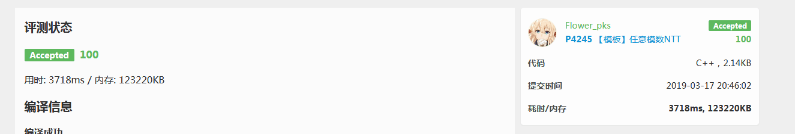

上一篇多项式：多项式1·普通的FFT
$\rm{0x01\quad Preface}$
今天是$Feb.19^{th}$，开学前一天，现在是北京时间下午$10:05$，我还剩除了英语物理的所有作业没做 … 耶，真开心。
由于特殊原因嘛，我暂时不会写的特别详细——毕竟还有作业没有做抄完，所以就先整理地仓促一点。
首先，为什么要拆系数？这是一个问题——直接$FFT$之后判个精度再取模不就得了？很喜闻乐见的是，这个题中的$value_{max}$到达了$1e9\cdot1e9 \cdot 1e5 = 1e23$的级别，不可以直接long long爆艹。
$\rm{0x02~Normal-Coefficient-Spliting~FFT}$
首先是最朴素的拆系数法。其原理简单得很，就是选择一个$M$，把$A(x)$和$B(x)$的各项系数表示成
$$
A_i = a_iM+b_i~(0\leq b_i <a_i) \\
B_i = c_iM+d_i~(0\leq d_i <c_i)
$$
的形式。然后我们做乘法的话，会有
$$
A_i\cdot B_i = a_ic_iM^2+(a_id_i+c_ib_i)M+b_id_i
$$
那么我们考虑，对于第一部分$a_ic_iM^2$我们可以通过一次$DFT$、一次$IDFT$算出来，；对于第二部分$(a_id_i+c_ib_i)M$ 我们可以通过两次$DFT$分别算出$a_id_i$、$c_ib_i$然后合并，之后一次$IDFT$求出来；对于最后一部分则只需要一次$DFT$、一次$IDFT$求出。所以算法流程一共$7$次$FFT$。
那我们考虑估计一下范围，此处不甚严谨地使用$\Theta$作为同阶的符号$^{[1]}$
$$b_i\cdot d_i \approx \Theta(M^2)$$
$$a_i\cdot c_i =\lfloor \frac{P}{M}\rfloor \cdot \lfloor \frac{P}{M}\rfloor = \Theta(\lfloor \frac{P^2}{M^2}\rfloor)$$
$$(a_id_i + c_ib_i)\cdot M =\Theta( M \cdot \lfloor \frac{P}{M}\rfloor) $$
那么我们取$M = \Theta(\sqrt P)$级别的，可以保证三个值的阶为$\Theta(P)$，大概是$1e9 \cdot 1e5 = 1e14$级别的。
1 |
|
所以最终的复杂度是$\boldsymbol{O(7\cdot P(n) \cdot n \log n)}$，其中$P(n)$是$FFT$自带的、大到不可忽略的常量因子。
但是……好像这个常数有点大诶，算上常数的话已经是$O(n \log^2n)$的级别了，于是——
$\rm{0x03~Conjugate~Optimization}$
源自毛啸的《再探快速傅立叶变换》。
我们思考这样两个多项式$\boldsymbol{P, Q} \in \mathbb{C}$
$$
\rm{P(x) = A(x) + iB(x)} \\
\rm{Q(x) = A(x) - iB(x)}
$$
我们不妨令$P’[k]$和$Q’[k]$为其$\text{DFT}$之后的序列，即$P’[k] =P(\omega_n^k),Q’[k] =Q(\omega_n^k) $。
同时，令$\text{conj(x)}$表示对$x$取共轭。
那么会有$^{[5]}$：
$$
\begin{align}
P’[k] &= A(\omega_{n}^{k}) + i B(\omega_{n}^{k}) \\
& = \sum_{j=0}^{n-1} A_{j} \omega_{n}^{jk} + i B_{j} \omega_{n}^{jk} \\
& = \sum_{j=0}^{n-1} (A_{j} + i B_{j}) \left(\cos \left(\frac{2 \pi jk}{n}\right) + i \sin \left(\frac{2 \pi jk}{n}\right)\right) \\
& = \sum_{j=0}^{n-1} (A_{j} + i B_{j}) \omega_{n}^{kj}
\\
Q’[k] &= A(\omega_{n}^{k}) - i B(\omega_{n}^{k}) \\
& = \sum_{j=0}^{n-1} A_{j} \omega_{n}^{jk} - i B_{j} \omega_{n}^{jk} \\
& = \sum_{j=0}^{n-1} (A_{j} - i B_{j}) \left(\cos \left(\frac{2 \pi jk}{n}\right) + i \sin \left(\frac{2 \pi jk}{n}\right)\right) \\
& = \sum_{j=0}^{n-1} \left(A_{j} \cos \left(\frac{2 \pi jk}{n}\right) + B_{j} \sin \left(\frac{2 \pi jk}{n}\right)\right) + i \left(A_{j} \sin \left(\frac{2 \pi jk}{n}\right) - B_{j} \cos \left(\frac{2 \pi jk}{n}\right)\right) \\
& = \text{conj} \left( \sum_{j=0}^{n-1} \left(A_{j} \cos \left(\frac{2 \pi jk}{n}\right) + B_{j} \sin \left(\frac{2 \pi jk}{n}\right)\right) - i \left(A_{j} \sin \left(\frac{2 \pi jk}{n}\right) - B_{j} \cos \left(\frac{2 \pi jk}{n}\right)\right) \right) \\
& = \text{conj} \left( \sum_{j=0}^{n-1} \left(A_{j} \cos \left(\frac{-2 \pi jk}{n}\right) - B_{j} \sin \left(\frac{-2 \pi jk}{n}\right)\right) + i \left(A_{j} \sin \left(\frac{-2 \pi jk}{n}\right) + B_{j} \cos \left(\frac{-2 \pi jk}{n}\right)\right) \right) \\
& = \text{conj} \left( \sum_{j=0}^{n-1} (A_{j} + i B_{j}) \left(\cos \left(\frac{-2 \pi jk}{n}\right) + i \sin \left(\frac{-2 \pi jk}{n}\right)\right)\right) \\
& = \text{conj} \left( \sum_{j=0}^{n-1} (A_{j} + i B_{j}) \omega_{n}^{-jk} \right) \\
& = \text{conj} \left( \sum_{j=0}^{n-1} (A_{j} + i B_{j}) \omega_{n}^{(n-k)j} \right) \\
& = \text{conj} \left( P’[n-k] \right)
\end{align}
$$
好吧我承认这段推导过程的代码甚是壮观，于是并不是我自己写的qwq。
那么我们发现其中$A(x)$和$B(x)$可以通过$P,Q$推出来：
$$
A’[k] = \frac{P’[k] + Q’[k]}{2} \\
B’[k] = \frac{P’[k] - Q’[k]}{2i}
$$
哦，对了，当$k=0$时，由于不存在这一项，所以我们需要特判一下。并且由于我们的$P(x)$和$Q(x)$的实部和虚部都可以利用，所以我们对于七次$DFT$可以优化到$4$次$DFT$.
以下是共轭优化$FFT$的初号机：
1 |
|
$\rm{0x04\quad}$拼命卡常
好的，首先我们可以欣赏一下最初的版本（用小号交的拆系数$FFT$ + $O2$）
然后是大号的共轭优化$FFT$（不加$O2$，即上方代码）：
特别的，以下是无共轭优化的拆系数$FFT$，不开$O2$:

好吧，他看起来没有快多少。毕竟都是同阶的复杂度，好像后者的常数更大那么一点……
于是考虑对共轭优化的进行大力卡常：
- 多次使用的非全局变量。使用
register修饰符。 - 将$double$转换成为$long~double$ 。
- 减少取模次数。
- 从yjk那里偷来的$\rm{fread/fwrite}$
一番操作之后，我们成功地卡到了第五页上……
最后奉上最快的代码qwq：
1 | // luogu-judger-enable-o2 |
实践证明，以上代码不加任何优化（不开$\rm{O2/3/fast}$）甚至可以快$4ms$！
$\rm{0x00\quad Afterword}$
嗯，其实按道理来讲，不是特别难。但是这跟$HLPP$一样，都是打死都不会考的算法，所以学这些只是为了娱乐……听起来挺苍凉？
但似乎，从一开始就不应该把应付考点作为OI的初衷吧，虽然如果没有获利，没有多少人会去学，但是不沾染功利的OI，似乎可爱了那么几分呢……
并且在学的过程中顺便认识了一个巨佬CMXRYNP，嘿嘿，也算不亏啦。
本篇文章真实完稿时间是$2019/3/17$，因为太懒+太忙，鸽了一个月$\rm{qaq}$.
$\rm{Reference}$
- $[1]$ :$lvzelong2014$的$blog$ $^{^{[\nearrow ]}}$
- $[2]$:
无梦之梦的$blog$ $^{^{[\nearrow ]}}$ - $[3]$:$Cyhlnj$的$blog$ $^{^{[\nearrow ]}}$
- $[4]$:$litble$的$blog$ $^{^{[\nearrow ]}}$
- $[5]$:$CMXRYNP$的$blog$ $^{^{[\nearrow ]}}$
- $[6]$ :2016国家集训队论文《再探快速傅里叶变换》毛啸· $^{^{[\nearrow]}}$ 提取码：vua4